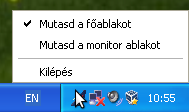

A MAVA Logger X a Malév Virtual légitársaság színeiben történő szimulált járatok végrehajtását kíséri figyelemmel, és összegyűjti a járatról a MAVA honlapjára további elemzés céljából elküldendő adatokat. Ez a kézikönyv leírja a program használatát. A program képességeinek teljes kihasználásához szükség van élő Internet kapcsolatra, még akkor is ha nem a VATSIM vagy az IVAO hálózaton repülünk. Ezzel együtt azonban lehetséges járatot teljesíteni hálózati kapcsolat nélkül is.
A járat teljesítésének követése közben a program folyamatosan ellenőrzi, hogy a repülőgép konfigurációja megfelel-e a légitársaság működési eljárásaiban meghatározott paramétereknek. Például a repülőgép fényeit meghatározott szabályok szerint kell fel- és lekapcsolni, nem haladhatunk meg bizonyos tömeg- és sebességkorlátokat, s.í.t. Az elvárt paraméterektől való eltérések, vagy hibák a kezdeti 100 pontot (vagy százalékot) meghatározott mértékben csökkentik. Az eredmény a járat pontszáma. Néhány eltérés annyira súlyos, hogy NO GO hibának tekintjük és a járat elutasítát eredményezi.
A hibák mellett a program más paramétereket is figyel, amelyeket egy szöveges naplóba jegyez le. E naplót is tartalmazza az elküldött PIREP (PIlot's REPort), és a Malév Virtual tapasztalt pilótái ezt is elemzik, illetve adott esetben megjegyzést fűzhetnek hozzá. Így tökéletesíthetjük a járatok teljesítésének színvonalát.
A program a járat teljesítését több fázisra bontja. Az egyik fázisról a következőre való átmenetet automatikusan érzékeli. Az alábbiakban felsoroljuk e fázisokat és azokat a feltételeket, amelyeknek teljesülniük kell az egy adott fázisba való belépéshez:
A szimuláció élményének javítására a program a járat teljesítésének egyes szakaszaiban megfelelő beállítás esetén különféle hang állományokat, mint például a légiutaskísérők bejentéseit, játssza le. Ezen állományok a programhoz tartoznak, és vagy automatikusan kerülnek lejátszásra, vagy ha megnyomunk egy gyorsbillentyűt a szimulátorban. Emellett előre felvett hangállományokból az egyes repülőgép típusokhoz ellenőrzőlistákat állíthatunk össze. Az ellenőrzőlistákat alkotó hangfelvételeket egy másik gyorsbillentyű lenyomásával játszhatjuk le egyenként. Ezzel kapcsolatban további tudnivalók az alábbiakban olvashatók.
A Malév Virtual rendelkezik egy Online ACARS rendszerrel, amelyik a MAVA honlapján valamint egy térképen is megjeleníti a folyamatban lévő járatok állapotát.
A Malév Virtual továbbá egy Online kapukezelő rendszert is üzemeltet, amelynek adatbázisa tartalmazza a flottát alkotó repülőgépek helyét. Egy adott repülőgép tartózkodhat a budapesti ferihegyi repülőtéren, amikor is az adatbázis tartalmazza, hogy a gép melyik kapun vagy állóhelyen áll. Ha ez a helyzet, és Ferihegyről indul az éppen teljesített járat, a program megjeleníti a kapu vagy állóhely számát, és a szimulátorban javasolt a megjelelölt pozícióra állítani a gépet. Ha Ferihegyről indulunk, de a repülőgép máshol van (például egy másik járat teljesítése miatt), kiválaszthatjuk, hogy honnan szeretnénk indulni. Az Online kapukezelő rendszer adatbázisa külön is megjeleníthető a programban.
A fenti két rendszer csak online repülés esetén használható.
A program automatikusan frissíti önmagát. Elinduláskor leellenőrzi, hogy van-e a telepítettnél újabb változat. Ha igen, letölti azt, majd újraindítja saját magát, immár az új változatban. A frissítés nemcsak a hibajavítások beszerzése miatt fontos, hanem például azért is, mert a program bővülhet újabb ellenőrzésekkel vagy a már meglévők közül egyesek kifinomultabbá válhatnak, és ha túl régi változatot használunk, a PIREP javítók akár amiatt is elutasíthatják a járatot.
Az alkalmazás felülete a megszokott elemekből (gombokból, jelölőnégyzetekből, listákból, szövegbeviteli mezőkből, stb.) épül fel. A legtöbb elem rendelkezik tooltippel, amelyek e kézikönyv mellett további segítséget nyújtanak a program használatához. A legtöbb elem a billentyűzetről is kezelhető, ha a címkéjében lévő aláhúzott betűt vagy számot az Alt billentyűvel együtt ütjük le.
A program legtöbbször használt része a főablak, amelyet az alábbiakban részletesen leírunk. Ha az ablakot minimalizáljuk vagy lecsukjuk, alapértelmezésben csupán eltűnik, de maga a program tovább fut. A lenti képen is látható tálcaikon segítségével az ablak újra megjeleníthető.
|  |
Ha rákkantintuk a tálcaikonra mikor a program ablak nem látszik, akkor az megjelenik. Ha az ikon fölé visszuk az egérmutatót, majd várunk, a repülés aktuális fázisa és pontszáma jelenik meg. A tálcaikon jobbgombos menüje az alábbi pontokat tartalmazza:
Az alkalmazásból a Fájl/Kilépés menüpont választásával vagy a Ctrl+K billentyűkombinációval is kiléphetünk.
Ha elindítjuk a programot, de az már fut, akkor a már futó példány főablaka jelenik meg ahelyett, hogy új példány indulna el.
A lenti ábra az alkalmazás főablakának a képe. A felső része a megszokott menüsort tartalmazza, amelyről az alábbiakban olvasható több tudnivaló. Az ablak középső része több fülből áll, amelyek használatát a lentiekben részletesen leírjuk.
Az ablak alsó része az állapotsor. Bal szélén látható a szimulátorral való kapcsolat állapotát jelző ikon. Mivel a program folyamatosan figyeli a repülőgép paramétereit, kommunikálnia kell a szimulátorral. E kommunikációs csatorna állapotát az ikon színe jelzi.
Ha az szürke, a program nem áll kapcsolatban a szimulátorral. Ez normális a járat teljesítése előtt és azután. Ha az ikon zöld színű, a kapcsolat él és megfelelően működik. Ha az ikon piros, a kapcsolat megszakadt. Ebben az esetben egy dialógus ablak jelenik meg. A kapcsolat megszakadásának legvalószínúbb oka a szimulátor elszállása. Ebben az esetben indítsuk azt újra és a repülést állítsuk vissza, amennyira csak lehetséges, az elszállás előtti állapotra. Ezután kattintsunk az Újrakapcsolódás gombra, és a logger megpróbálja visszállítani a kapcsolatot a szimulátorral. Mivel megőrzi a járat összes adatát, ott folytathatjuk, ahol abbahagytuk.
Ha a kapcsolat megszakadásának más az oka, próbáljuk az okot megszüntetni. Természetesen lehetséges, hogy maga a logger működik hibásan, és ebben az esetben sajnos nincs más lehetőség, mint a járat újrakezdése. Ebben az esetben feltétlenül értesítsük a szerzőt, és az értesítésbe másoljuk be a debug napló tartalmát.
Ha a kapcsolat megszakadását jelző dialógus ablakban a Mégse gombot nyomjuk meg, a logger alapállapotba kerül.
A kapcsolat állapotát jelző ikontól jobbra a járat aktuális fázisa olvasható, ha annak követése már elkezdődött, egyébként egy gondolatjel. Ezt követi a szimulátor belső ideje, ha már kapcsolódtunk hozzá, majd a pontszám.
Az állapotsor jobb oldala általában üres, de ha valamilyen potenciálisan hosszú ideig tartó művelet (például a MAVA szerverével való kommunikáció) van folyamatban, akkor arról itt jelenik meg információ. Ennek időtartama alatt a kurzor foglalt állapotot jelez és a főablak nagy része nem reagál.
A járat fül a legfontosabb. A sok programban megtalálható varázslókhoz hasonlóan lapok sorozatából áll. E lapok nagy része a a repülés előkészítésének lépésein vezet végig, míg az utolsó néhányon olyan adatokat adhatunk meg, amelyek szükségesek a repülés kiértékeléséhez és az összeállított PIREP-nek a MAVA szerverére való elküldéséhez.
Minden lap tetején egy, a lap célját jelző cím olvasható. Ez alatt egy rövid szöveg írja le, hogy mit tartalmaz a lap és/vagy mit kell azzal a lappal kapcsolatban tennünk. E szöveg alatt találhatók a lényegi információk és az esetleges adatbeviteli eszközök. Alul, jobb oldalon pedig a gombsor látható.
A legötbb lap két gombot tartalmaz: Előre és Vissza. Ezekkel lehet mozogni a lapok között. A legtöbb esetben a Vissza gombbal visszamehetünk a korábban már látott lapokhoz, bár azok egy részének a tartalma nem módosítható miután az Előre gombbal már továbbléptünk róluk. Ez alól van néhány kivétel, mint azt az alábbiakban részletezzük.
Sok lap tartalmaz még egy Járat megszakítása feliratú gombot is. Erre kattintva az aktuális járat megszakítható és ha ebbéli szándékunkat megerősítettük, visszakerülünk a járatválasztás oldalra, ha korábban bejelentkeztünk a MAVA szerverére, vagy a bejelentkezés oldalra egyébként.
A program a Bejelentkezés oldallal indul (lásd a fenti
képet), ahol megadhatjuk a pilóta
azonosítónkat és a MAVA honlapján is használható
jelszavunkat. Mindkét adatot a rendelkezésünkre bocsájtják a Malév
Virtualhoz való belépéskor. A pilóta azonosító rendszerint P
betűvel kezdődik, amit három számjegy követ.
Ha kijelöljök az Emlékezz a jelszóra jelölőnégyzetet, a jelszót elmenti a program, így nem kell azt mindig beírnunk. Fontos figyelembe venni, hogy a jelszót olvasható formában menti el a program a konfigurációs fájlba, így csak akkor használjuk ezt a lehetőséget, ha a könyvtárunkhoz csak megbízható emberek férnek hozzá. A pilóta azonosítót mindenképpen elmenti a program.
Ha az ellenőrző repülést szeretnénk elvégezni, jelöljük be az Ellenőrző repülés jelölőnégyzetet. Ebben az esetben a jelszót nem is kell, és nem is adhatjuk meg, mivel az ellenőrző repüléshez arra nincs szükség.
A MAVA szerverére való bejelentkezéshez és a következő lap eléréséhez nyomjuk meg a Bejelentkezés gombot.
Ha Internet kapcsolat nélkül szeretnénk repülni, használjuk az Offline repülés gombot. Ezzel egyből a következő lapra kerülünk anélkül, hogy a program megpróbálna belépni a MAVA szerverére.
Ezen az oldalon a korábban a MAVA honlapján foglalt járatok listáját találjuk, amenyiben sikeresen bejelentkeztünk. Ha offline repülést választottunk, a lista üres.
Ha a listából kijelölünk egy járatot, akkor azt a Járat mentése gombbal elmenthetjük. Ez akkor lehet hasznos, ha egy későbbi időpontban, offline szeretnénk repülni. A repülés előkészítése során a loggerrel bejelentkezhetünk a MAVA szerverére és lekérhetjük a foglalt járatok listáját. Ezután a később offline végrehajtani kívánt járatot elmenthetjük, majd a tényleges végrehajtáskor visszatölthetjük.
Szükség lehet a járatlista frissítésére. Például elképzelhető, hogy elfelejtettük lefoglalni a teljesíteni kívánt járatot. Ekkor a foglalást megtehetjük a MAVA honlapján, majd a Járatlista frissítése gombra kattintva frissíthetjük a listát.
A Járat betöltése fájlból gombra kattintva egy járatot
tölthetünk be. Ekkor egy fájlválasztó dialógus ablak jelenik meg,
ahol kiválaszthatjuk a betölteni kivánt járat fájlt (amelynek
kiterjesztése általában .vaflight). Ez leginkább
offline vagy ellenőrző repüléskor hasznos.
Válasszunk egy járatot a listából, majd nyomjuk meg az Előre gombot a kiválasztott járat teljesítésének elkezdéséhez.
Ez az oldal csak akkor jelenik meg, ha a járat a budapesti ferihegyi repülőtérről indul és nem lehet eldönteni, hogy annak melyik kapujáról vagy állóhelyéről.
Válasszuk ki a megfelelő számot a listából, majd nyomjuk meg az Előre gombot.
Ez az oldal a járat néhány fontos adatát tartalmazza, mint a használandó repülőgép típusát és lajstromjelét, az induló repülőteret és esetleg a kapu vagy állóhely számát.
A szimulátorban válasszuk ki a jelzett repülőgépet és parkoljuk le az induló repülőtéren, majd a loggerben nyomjuk meg a Kapcsolódás gombot a szimulátorral való kapcsolat kiépítéséhez. Ha az nem sikerül, erről egy dialógus ablakban tájékoztat a program, amelynek segítéségvle a hiba elhárítása után a Próbáld újra gombbal a kapcsolat létrehozására újabb kísérlet tehető, míg a Mégse gombbal visszamehetünk a járatválasztó vagy a bejelentkező oldalra.
A kapcsolat sikeres létrehozása után a járat követése még nem kezdődik el azonnal, de a logger már ekkor is lekérdezhet bizonyos adatokat.
Ezen az oldalon a járattal szállított hasznos teher összetevőit láthatjuk valamint a kiszámított Zero-Fuel Weight (ZFW) értékét. Az összes bemeneti adat szerkeszthető, de általában csak a teherszállítmány tömegét szükséges megadni, ha az 0-tól eltérő. A ZFW a szimulátorból gomb megnyomásának hatására a program a szimulátorból lekérdezi a ZFW értékét és megjeleníti azt. Ha az túlzottan eltér a számított értéktől, akkor ez utóbbi piros színnel jelenik meg. Állítsuk be a szimulátorban a hasznos terhet. Ha ezt elfelejtjük, abból NO GO hiba lesz.
Ha végeztünk az oldal kitöltésével, nyomjuk meg az Előre gombot. Ekkor a Segítség fül használhatóvá válik, ls igénybe is vehetjük, ha a szimulátorban nem sikerült megfelelően beállítani a hasznos terhet. A fül részletesebb leírását lásd az alábbiakban.
Ez az oldal tartalmazza a járat indulási és érkezési idejét UTC-ben. Az Idő a szimulátorból gomb megnyomásának hatására a program lekérdezi a szimulátor aktuális idejét. A járat valós fényviszonyainak megjelenítése érdekében a szimulátor idejének meg kell egyeznie a járatéval. Javasolt az időt az indulási idő előtt 15 perccel korábbra állítani, hogy legyen elég időnk a repülés előkészítésére.
Ha a szimulátorban beállítottuk a megfelelő időt, nyomjuk meg az Előre gombot.
Ezen az oldalon a repülőgép üzemanyagtartályainak grafikus képét láthatjuk. A sárgás szín az egyes tartályok aktuális üzemanyagszintjét jelzi, a zöldeskék csúszka pedig a kívánt szintet, amelyet az egyes ábrák alatt számmal (kilogrammban) is láthatunk.
A kívánt mennyiséget megadhatjuk számmal, vagy beállíthatjuk a zöldeskék csúszkákkal is, bár ez a módszer kevésbé pontos. A csúszkát mozgathatjuk a tartályt jelképező ábrába való kattintással, vagy húzhatjuk is, ha az egér gombját lenyomva tartjuk. Ha az egér rendelkezik görgővel, azzal is módosíthatjuk a kívánt mennyiséget, ha az egérmutatót az ábrán tartjuk. A görgő minden lépése 10 kilogrammal növeli vagy csökkenti a mennyiséget. Ha görgetés közben lenyomva tartjuk a Shift gombot, a változás 100, ha pedig a Ctrl gombot tartjuk lenyomva, a változás 1 kg.
Ha beállítottuk az összes tartályt, nyomjuk meg az Előre gombot. Ekkor elkezdődik az üzemanyag szivattyúzása. Ennek folyamatát a sárgás oszlopok magasságának növekedése vagy csökkenése jelzi (elképzelhető, hogy egyes tartályokból ki kell szivattyúzni az üzemanyagot). A pumpálás viszonylag rövid ideig, néhány másodpercig tart.

Ezen az oldalon az utazószintet és az útvonaltervet láthatjuk és szerkeszthetjük. Az utazószint kezdeti értéke FL240, de az útvonalat a foglalt járatból veszi a program. Állítsuk be a szintet a tervezettre, és szükség esetén módosítsuk az útvonalat. Ha például egyes légterekbe belépve szükség lehet az utazószint módosítására, azt adjuk meg itt.
Ha megtettük a szükséges módosításokat, nyomjuk meg az Előre gombot a továbblépéshez. Ha később visszatérünk erre az oldalra, az adatokat szerkeszthetjük.
Ezen a két oldalon az induló illetve az érkező repülőtér NOTAM-jait és METAR-ját olvashatjuk. A METAR-t szerkeszthetjük ha a hálózatról más időjárást kapunk, vagy nem a valós időjárási viszonyok mellett repülünk. Az érkező repülőtér METAR-ját a program frissíti a leszállási fázisba való belépéskor, hacsak előtte nem szerkesztettük azt. A METAR-ok a repülés teljes időtartama alatt szerkeszthetők. Ha azonban így teszünk, annak okát a Járat info fül Megjegyzések rovatában jelezzük.
A második (az érkezési repülőtérhez tartozó) eligazítási oldalon a megfelelő gomb megnyomásával erősítsük meg, hogy készen állunk a repülésre. Ezzel elkezdődik a járat teljesítésének követése a beszállás fázissal.
Ezen az oldalon kell beírni a felszállásra használt futópálya számát, az alkalmazott szabványos műszeres indulási eljárást, valamint a felszállási sebességeket. Noha bármikor szerkeszthetjük ezeket az adatokat, javasolt azokat a felszállás előtt beírni.
Ha valamelyik Tupoljev vagy Jak típussal repülünk, a sebességeket kilométer per órában kell megadni.
A flotta legtöbb típusának esetében meg kell adni a felszállási teljesítménycsökkentés mértékét is. Ennek pontos formája és értéke a típustól függ.
Azt is kiválaszthatjuk, hogy bekapcsoltunk-e valamilyen jegesedésgátló berendezést (a pitot csövek fűtésétől eltekintve). A legtöbb repülőgépnél azonban a program tudja érzékelni a beállítást, és ha a jegedesedésgátló be van kapcsolva, a jelölődoboz automatikusan kijelölésre kerül. Ha mi magunk kijelöljük, a program magától nem szüntetni meg a kijelölést (hacsak nem ébred öntudatra majd valamikor).
A következő oldalra felszállás után az Előre gomb megnyomásával léphetünk tovább, ha minden adatot beírtunk.
Ezen az oldalon az Útvonal oldalon beállított utazószint látható. Ha a légtérre vonatkozó előírások, step climb, vagy bármely más megalapozott ok miatt módosítani kell az utazószintent, itt kell megadni az új értéket, majd annak elérésekor megnyomni a Frissít gombot.
Ha már tervezzük a leszállást, az Előre gomb megnyomásával a következő oldalra léphetünk.
Ezen az oldalon a tervbe vett szabványos érkezési és/vagy bevezetési
eljárás nevét, a megközelítés típusát
(pl. ILS
, VOR
, VISUAL
, stb.) és a
köszöbátlépési sebességet (Vref) kell megadni. Az
eljárások esetén mindig a tervezettet adjuk meg, és ha például az
irányítástól eltérőt, netán vektorokat kaptunk, azt a megjegyzésben
tüntessük fel. Az adatokat repülés közben vagy akár leszállás után
is megadhatjuk. Ha Tupoljev vagy Jak típussal repülönk, a sebességet
km/órában kell megadni.
Ez az oldal is tartalmaz egy, a jegesedésgátló berendezések működésére vonatkozó kijelölődobozt, amelyre ugyanazok érvényések, mint a Felszállás oldalon található társára.
Ha minden adatot megadtunk, nyomjuk meg az Előre gombot. Ez csak akkor használható, ha a járat teljesítése véget ért.
Ez a járat varázsló utolsó oldala. Tartalmazza a járat összesítését: a pontszámot, a repült és blokk időt, a repült távot és az eltüzelt üzemanyag mennyiségét.
Emellett néhány adatot is meg kell adnunk. Ki kell választani a járat típusát (menetrendszerint, old-timer, VIP vagy charter), és hogy online repülés volt-e. Ha a ferihegyi repülőtérre érkezünk, ki kell választani annak a kapunak vagy állóhelynek a számát, ahol a repülőgépet leparkoltuk.
Ha minden szükséges adatot megadtunk és a programot megfelelően konfiguráltuk, a PIREP automatikusan elmentődik.
Ha minden adatot megadtunk, ellenőrizhetjük a korábbi oldalakon vagy más füleken megadottakat, majd elmenthetjük vagy elküldhetjük az elkészített PIREP-et az alul lévő, erre a célre szolgáló két gomb valamelyikének a megnyomásával. Az elmentett PIREP-et később betölthetjük, és megpróbálhatjuk elküldeni, hogy korábban az nem sikerült. Ha a PIREP-et sikeresen elküldjük, az a Malév Virtual kijelölt PIREP javítói számára értékelhetővé válik.
Az Új járat... gomb megnyomásával egy új járat teljesítését kezdhetjük el. Ha még nem mentettük el és nem is küldtük el a PIREP-et, szándékunk megerősítését kéri a logger. Új járat kezdésekor a járatválasztás oldalra kerülünk, ha korábban sikeresen bejelentkeztünk a MAVA szerverére, egyébként pedig a bejelentkezés oldalra.
Ezen az oldalon további információt adhatunk a járattal kapcsolatban, ha szükséges.
A Megjegyzések szövegmezőbe olyan információt írhatunk be, amit szeretnénk a PIREP javító tudomására hozni. Például, hogy miért változtattuk meg METAR-t, miért engedtük ki véletlenül a futóművet (rossz gombot nyomtunk meg a billentyűzeten), stb.
A Hibajelenségek szövegmező a repülőgéppel kapcsolatban tapasztalt hibák leírását tartalmazhatja. Például, hogy leállt az egyik hajtómű, és (ha ismert) miért, hogy a fékszárnyakat nem sikerült kiengedni vagy visszahúzni, stb.
A Késés kódok táblázatban kijelölhetjük a késés okát vagy okait, ha volt ilyen. A táblázat csak akkor érhető el, ha már kiválasztottuk teljesíteni kívánt járatot, ugyanis a tartalma függ a repülőgép típusától.
Ez a fül segít a repülőgép hasznos terhének kiszámításában. Azután használható, hogy a Terhelés lapot, pontosabban ott a teherszállítmány tömegét véglegesítettük. A segítség igénybe vételéhez jelöljük ki a Használom a segítséget négyzetet. Ekkor a fülön látható adatok kitöltésre kerülnek és a szimulátorból is letölthetjük az adatokat. A segítség igénybevételének ténye bekerül a repülési naplóba, így a PIREP javítója tudni fog róla.
A legfontosabb információ a Hasznos teher: címke után olvasható, ugyanis ezt kell a szimulátorban beállítani mint a repülőgép hasznos terhét. A Szimulátor adatok gomb megnyomására a program lekérdezi és megjeleníti a szimulátorból kiolvasott adatokat. Ha azok a megengedettnél nagyobb mértékben térnek el a kiszámított adatoktól, piros színnel, egyébként zölden jelennek meg.
A teljes tömeget és bizonyos maximális tömegeket szintén megjelenít a program, így hozzávetőlegesen azt is ellenőrizhetjük, hogy a maximumokat nem fogjuk-e túllépni a repülés során.
Ez a repülési napló, amit a PIREP javítók elemezni fognak. A tartalmát a program automatikusan állítja elő, és a legtöbb sor elején az a szimulátorbeli időpont olvasható, amelyhez a sorban olvasható információ tartozik.
Bár a napló tartalma elsősorban a PIREP javítók számára szükséges, jól jöhet akkor is, ha a dolgok hirtelen nagyon gyorsan kezdenek zajlani, és nem tudjuk követni az összes hibaüzenetet (ha egyáltalán engedélyeztük azokat). Később, ha a helyzet normalizálódott, megnézhetjük a naplót, hogy pontosan mi is történt, miért kaptunk annyi hibapontot. Például úgy is dönthetünk, hogy abbahagyjuk a repülést, ha úgy gondoljuk, hogy egyes hibák túl kínosak :) A gyors felismerhetőség érdekében a hibaüzeneteket tartalmazó sorokat kiemeli a program.
Ez a fül a MAVA online kapukezelő rendszerétől lekérdezett adatokat jeleníti meg. Amikor a programnak szüksége van ezekre az adatokra, e fül adatait is frissíti magától, de kézzel is kérhetünk frissítést az Adatok frissítése gomb megnyomásával.
A bal oldalon a flotta állapotát láthatjuk. A lista az egyes repülőgépek lajstromjelét és állapotát tartalmazza, legalábbis amit erről a kapukezelő rendszer adatbázisa tárol. A két legfontosabb állapot az LHBP-nn és a TÁVOL. Az előbbi ezt jelzi, hogy a repülőgép a budapesti ferihegyi repülőtéren az nn számú kapunál vagy állóhelyen parkol, míg az utóbbi arra utal, hogy a repülőgép egy másik repülőtéren tartózkodik. Másik lehetséges állapot a PARKOL, ami azt jelenti, hogy a repülőgép valahogy a ferihegyi repülőtéren áll, de nem tudjuk (vagy legalábbis a kapukezelő rendszer nem tudja), hol. Az is előfordulhat, hogy több repülőgép parkol ugyanott Ferihegyen. Ebben az esetben ezek lajstromjele és állapota pirossal szerepel.
Jobb oldalt a kapuk és állóhelyek száma látható. A szám fekete, ha az annak megfelelő helyen nem áll repülőgép, egyébként narancssárga.
Ez a fül alapértelmezésben nem látható, de a Nézet/Mutasd a debug naplót menüpont kiválasztásával vagy a Ctrl+D billentyűkombináció leütésével megjeleníthető. Ez egy másik fajta napló, ami hibakereséshez lehet hasznos. Ha valamilyen problémát tapasztalunk a program működésével kapcsolatban, e napló tartalmát is mellékeljük a hibajelentéshez. Sokban segíthet a megoldás megtalálásában.
Az elmentett PIREP-eket a programmal visszatölthetjük és elküldhetjük. Erre akkor lehet szükség, ha például egy járat teljesítése után közvetlenül nem tudjuk elküldeni a PIREP-et valamilyen hálózati probléma miatt, vagy ha szándékosan Internet kapcsolat nélkül repültük a járatot.
PIREP betöltéséhez válasszuk ki a Fájl/PIREP betöltése... menüpontot vagy nyomjuk meg a Ctrl+T billentyűkombinációt. Egy fájlválasztó ablak jelenik meg, amelyben kiválaszthatjuk a betöltendő PIREP-et. A kiválasztás után a PIREP betöltődik, és egy másik ablak jelenik meg a járat legfontosabb adataival. A PIREP elküldése... gomb megnyomására a PIREP-et a program megpróbálja elküldeni, és ennek eredményéről egy dialógus ablakban tájékoztat minket.
Előfordulhat, hogy egy elmentett PIREP-et alaposabban is meg szeretnénk nézni, például ha az egy ellenőrző repülésről készült. Ehhez nyomjuk meg a PIREP megtekintése... gombot. Ennek hatására megjelenik a PIREP megtekintő ablak, amely az adatokat három fül alá csoportosítja. Az Adatok fül a járattal kapcsolatos adatokat tartalmazza. A Megjegyzések és hibák fül a pilóta esetleges megjegyzéseit és hibajelenségekről szóló beszámolóit tartalmazza. A Napló fülön pedig a repülési napló olvasható.
Egy ellenőrzőlista tulajdonképpen hangfájlok listája. Ha az ellenőrzőlisták lejátszását engedélyeztük (lásd lent a Beállítások ablak leírását), és a járat teljesítéséhez használt repülőgéphez tartozik ellenőrzőlista, akkor a megfelelő gyorsbillentyű ismételt leütésével a listát alkotó fájlok egyenként lejátszhatók.
Az ellenőrzőlista szerkesztő ablak az Eszközök/Ellenőrzőlista szerkesztő... menüpont kiválasztásával, vagy a Ctrl+E billentyűkombinációval jeleníthető meg. Az ablak felső részén kiválaszthatjuk azt a repülőgép típust, amelynek az ellenőrzőlistáját szerkeszteni óhajtjuk.
Az ablak jobb oldalán látható azoknak a fájloknak a listája, amelyek az ellenőrzőlistát alkotják. Az egérrel fel-le húzhatjuk a fájlokat a listában. Emellett a listából kijelölhetünk egy vagy több fájlt, amelyeket aztán a Törlés gombbal törölhetünk, a Mozgatás felfelé és a Mozgatás lefelé gombbal pedig fel és le mozgathatunk.
Az ellenőrzőlistához úgy adhatunk hozzá további fájlokat, hogy a bal oldali fájlválasztóban kijelöljük azokat, majd megnyomjuk a Listához hozzáadás gombot. A kijelölt fájl(ok) a lista végére kerül(nek).
A változtatásokat csak akkor jegyzi meg a program, ha azok végeztével megnyomjuk az OK gombot. Ha azonban a járat teljesítése már elkezdődött, az ellenőrzőlista változtatása a folyamatban lévő repülés során nem tapasztalható (azaz a régi ellenőrzőlistát hallhatjuk, vagy egyáltalán nem kapunk ellenőrzőlistát, ha a járat megkezdésekor nem volt olyan).
A megközelítési bemondások olyan, adott repülőgéptípushoz tartozó hangfájlok, amelyeket a program a megközelítés során, bizonyos magasságok elérésekor játszik le. E fájlok listáját szerkeszthetjük a megközelítési bemondásokat szerkesztő ablakban, amelyet az Eszközök/Megközelítési bemondások szeresztése... menüpont kiválasztásával, vagy a Ctrl+M billentyűkombináció leütésével jeleníthetünk meg.
Az ablak felső részén választhatjuk ki a repülőgép típusát. Alatta, a bal oldalon két gombot, azoktól jobbra pedig a bemondások listáját láthatjuk. A listában a fájloknak csak a neve látható, de ha az egérmutatót a lista adott eleme fölött hagyjuk egy időre, megjelenik a teljes elérési út. A listát mindig a magasság szerint rendezi a program, de a sorrend átváltható a csökkenő és a növekvő között.
A Bemondás hozzáadása gomb használatakor egy fájlválasztó ablak jelenik meg. A fájl a kiválasztása után bekerül a listába valamilyen magassággal, amit azonnal lehet is szerkeszteni. Ha a fájl neve tartalmaz valamilyen számot, akkor az lesz a megajánlott magasság, egyébként a listában szereplő legkisebb és legnagyobb magasság alapján választ a program. Nem tartozhat ugyanaz a magasság egynél több fájlhoz. Ha olyan magasságot állítunk be, ami már szerepel listában, egy dialógus ablakban erről figyelmeztetést kapunk, és választhatunk, hogy a program lecserélje a másik fájlt, vagy hogy folytatjuk a szerkesztést. A lista egy eleméhez tartozó magasság szerkesztéséhez jelöljük ki az adott sort, majd kattintsunk a magasságra.
Ha a listából kijelölünk egy vagy több elemet, a Törlés gombbal azok törölhetők.
A változtatásokat csak akkor jegyzi meg a program, ha azok végeztével megnyomjuk az OK gombot. Ha azonban a járat teljesítése már elkezdődött, a bemondások listájának változtatása a folyamatban lévő repülés során nem tapasztalható.
Itt néhány általános beállítás található, amelyek a program különböző részeinek a működését befolyásolják. A Grafikus felület keretben a program grafikus felületének viselkedésére vonatkozó opciók találhatók. A Nyelv listában választhatjuk ki, hogy milyen nyelvet használjon a program. Jelenleg a magyar és az angol nyelvet támogatjuk. Az alapértelmezett lehetőség azt jelenti, hogy ha az operációs rendszer nyelve valamelyik támogatott nyelv, akkor a program is azon a nyelven fut, egyébként pedig angolul. Ha ezt a beállítást megváltoztatjuk, a programot újra kell indítani, hogy érvényre is jusson. Ha az A főablak eltüntetése minimalizálásakor jelölőnégyzetet kijelöljük, akkor a főablak minimalizálásakor az teljesen eltűnik (nem jelenik meg a többi minimalizált ablak között). Az ablak a tálcaikon használatával jeleníthető meg újra. Ha a Kilépés az ablakzáró gomb megnyomásakor jelölőnégyzet ki van jelölve, a program az ablakzáró gomb megnyomásának hatására megjeleníti a kilépési szándék megerősítésére szolgáló ablakot, és a jóváhagyás után kilép. Egyébként a főablak csak eltűnik, és a tálcaikon segítségével újra megjeleníthető.
A MAVA online rendszerek keretben a loggernek a MAVA fent leírt online rendszereivel, a kapukezelő és az ACARS rendszerrel való együttműködését engedélyezhetjük vagy tilthatjuk le. Javasolt ezek engedélyezése.
A Szimulátor keretben találhatók azok a beállítások, amelyek befolyásolják, hogy a program hogyan működik együtt a szimulátorral. A legtöbb beállítás magától értetődő, de az átlagolással kapcsolatosak némi magyarázatra szorulhatnak. A Flight Simulator egyik jellegzetessége, hogy néha nagyon hirtelen, nem egészen valószerű változásokat produkál a szélmozgásban. Ez azt eredményezi, hogy a szimulált repülőgép nagyon magas sebességet érzékel, amelynek hatására a robotpilóta adott esetben például jelentősen megnöveli az emelkedés sebességét, hogy ellensúlyozza a sebességnövekedést, vagy más hibás működést tapasztalunk. Mivel ezen jelenségek ellen nehéz védekezni különböző fizetős termékek, mint például az FSUIPC megvásárlása nélkül, a logger lehetőséget biztosít arra, hogy az IAS és a vario értékét néhány másodpercnyi átlagolás után vegye figyelembe egyes esetekben, így az ezekben az értékekben tapasztalható kiugrások kiátlagolhatók bizonyos fokig. Ez a lehetőség az Az IAS/vario átlagolása N másodpercig beállításokkal szabályozható. A beállítandó másodpercek számával szükséges lehet kísérletezni, de ha megnyomjuk az OK gombot, a beállítást azonnal figyelembe veszi a program.
Ha a PIREP mentése automatikusan jelölődobozt kijelöljük, a PIREP-et a program automatikusan elmenti a feljebb megadott könyvtárba, ha befejezetük a járatot és megadtunk minden szükséges adatot.
A program bizonyos események megtörténtekor azokról üzenetet tud megjeleníteni a szimulátorban és/vagy hangjelzést ad. Ezen a fülön ezt a funkciót állíthatjuk be.
A bal oldalon olvasható az üzenetek kategóriáinak listája. Ezek a következők:
Mindegyik üzenetkategóriához két jelölőnégyzet tartozik. Ha a bal oldalit (Szimulátorban megjelenítés) kijelöljök, az adott kategóriába tartozó szöveges üzenetek megjelennek a szimulátorban. Ha a jobb oldalit (Hangjelzés), akkor amennyiben egy, az adott kategóriába tartozó üzenetet kiváltó esemény következik be, figyelmeztető hangjelzést ad a program. Ezt elsősorban a szöveges üzenetek mellé szánjuk, de a két jelölőnégyzet egymástól függetlenül is állítható, így kijelölhetjük csak a hangjelzést a szimulátorban való megjelenítés nélkül. Ez akkor lehet hasznos, ha nem akarjuk a repülőgép szélvédőjét mindenféle üzenetekkel elborítani, de mégis szeretnénk valamilyen jelzést kapni arról, hogy gond lehet.
Ezen a fülön állíthatjuk be, hogy az alkalmazás hogyan játssza le a hangfájlokat.
A felső rész a háttérhangokra vonatkoznak. Ezek olyan előre rögzített hangfájlok, amelyeket a repülés közben, bizonyos körülmények fennállása esetén játszik le a program. Ilyenek például a légiutaskísérők különböző bejelentései. A Háttérhangok engedélyezése jelölőnégyzettel lehet engedélyezni ezeket. Ha a Pilóta vezérli a hangokat jelölőnégyzetet kijelöljük, a hangfájlok lejátszását a pilótának kell indítania egy gyorsbillentyű megnyomásával. Természetesen egy adott hangfájl lejátszásához a járat teljesítésének megfelelő fázisában kell lennünk, és egyes esetekben más feltételeknek is teljesülniük kell. Emellett egy fájlt csak egyszer játszhatunk le. Ha bekapcsoljuk ezt a lehetőséget, a szimulátorban leütendő gyorsbillentyűt is meg kell adnunk. A szám és betű billentyűk (0-9, A-Z) közül választhatünk, esetleg kombinálva a Ctrl és a Shift emelők közül valamelyikkel vagy mindkettővel. Ha nem engedélyezzük a pilóta által történő vezérlést, a program automatikusan játssza le a hangfájlokat.
Ha a Megközelítési bemondások engedélyezése jelölőnégyzetet kijelöljük, és a használt repülőgép típushoz megadunk megközelítési bemondásokat, akkor azokat a program megközelítéskor le is fogja játszani.
Ha a Spoiler hang bekapcsolása leszálláskor jelölőnégyzetet kijelöljük, a földetéréskor a spoilerek kinyílásakor egy jellegzetes hangot hallunk.
Az alsó, Ellenőrzőlisták nevű részben az ellenőrzőlisták lejátszával kapcsolatos beállításokat találjuk. Az ellenőrzőlisták lejátszhatóságát a Repülőgép-specifikus ellenőrzőlisták engedélyezése jelölőnégyzettel engedélyezhetjük. Engedélyezés esetén meg kell adnunk egy másik gyorsbillentyűt, amelynek megnyomásakor az ellenőrzőlistát alkotó fájlok közül mindig a soron következők játssza le a program.
Ezen a fülön olyan beállítások vannak, amelyeket normális esetben nem kell megváltoztatnunk. Jelenleg ezek az automatikus frissítéssel kapcsolatos beállítások. Ha a Frissítsd a programot automatikusan jelölőnégyzet kijelölését megszüntetjük, a program az indulásakor nem ellenőrzi, hogy van-e frissebb változat. A Frissítés URL-je szövegmezőben látható az az URL, ahonnan a frissítést letölti a program. A program fejlesztői kérhetik, hogy ezt változtasd meg, mert például egy tesztverziót szeretnének kipróbáltatni. Vagy szervezeti okok, például egy új szerverre való költözés miatt kell megváltoztatni, stb.
A monitor ablakot elsősorban hibakeresésre lehet használni. A Nézet/Mutasd a monitor ablakot menüpont kiválasztásával vagy a Ctrl+M billentyűkombináció leütésével lehet megjeleníteni. A tartalma repülés közben másodpercenként frissül. Ha a logger valamit nem érzékel megfelelően, ennek az ablaknak a segítségével dönthető el, hogy a probléma a szimulátorból kiolvasott adatok átalakításával, vagy a már átalakított értékek feldolgozásával van-e.